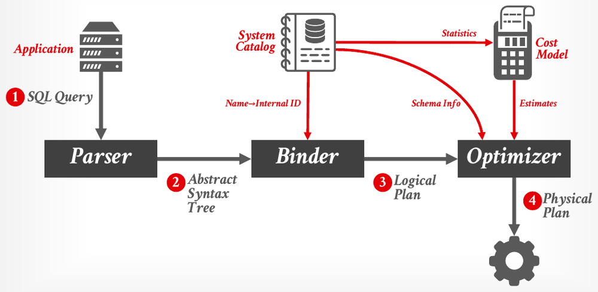
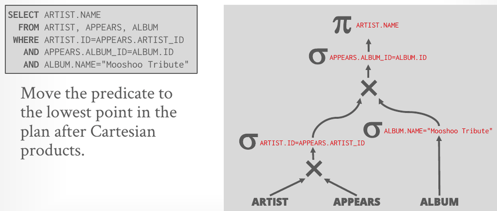
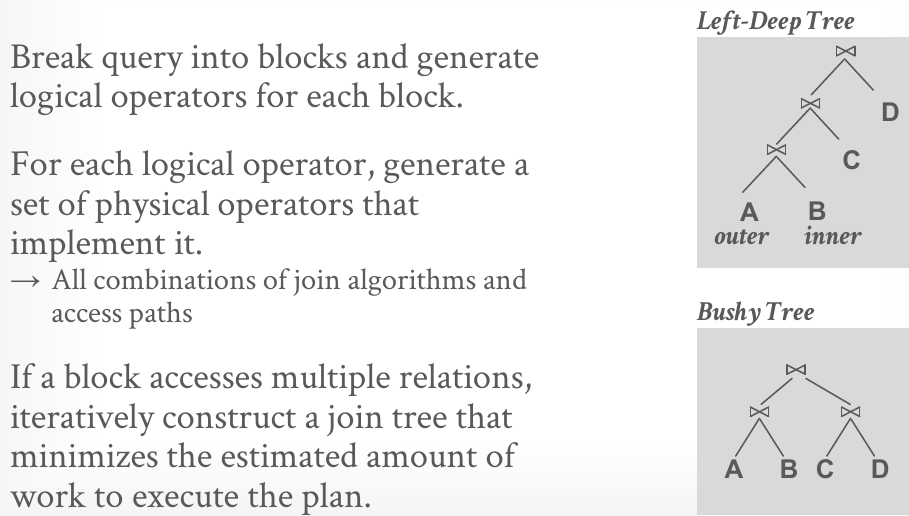
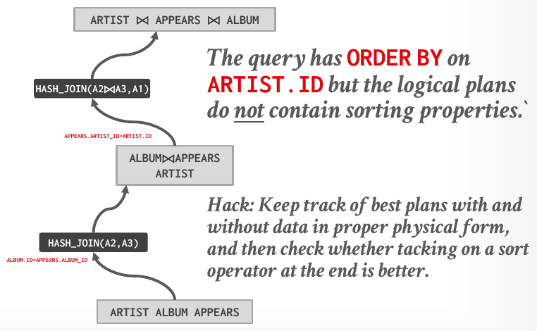

Database Internals in Go · Unit 5 · Lesson 7
Query Optimization I: Rewrite Rules and Plan Search
Follow a SQL statement from parser to physical plan, apply the standard rewrite rules to a logical plan, and contrast heuristic optimization with the bottom-up (System R) and top-down (Volcano/Cascades) cost-based searches.
Lessons 1 to 6 gave the DBMS a menu: several join algorithms, several access methods, sorting or hashing for aggregates, serial or parallel execution. SQL says what the answer is but not which items to pick, so some component has to choose. That component is the query optimizer, and the notes call it the most difficult part of building a DBMS. Lecture #15 covers how plans are rewritten and searched; the next lesson covers the statistics and cost estimates that guide the search. Project 3 has you write two optimizer rules.
Unit 0, Lesson 1: S has 1 billion tuples, and only one of them has b_id = 102. Compare σb_id=102(R ⋈ S) with R ⋈ σb_id=102(S).
Unit 5, Lesson 1: a file of N = 1,000,000 pages is sorted with B = 100 buffer pages by general external merge sort. How many passes, and how many I/Os?
Unit 5, Lesson 5: in a plan where a hash join builds on R and probes with σvalue>100(S), with a projection on top, which operator is a pipeline breaker?
From SQL to a physical plan
Slide 5 shows the path a query takes before execution:
- The application sends a SQL query to the parser, which turns the string into an abstract syntax tree (AST).
- The binder resolves the names in the AST (tables, columns) to internal identifiers by consulting the system catalog, and produces a logical plan.
- The optimizer turns the logical plan into a physical plan. It uses schema information from the catalog and estimates from a cost model, which in turn reads statistics from the catalog.

IBM's System R had the first query optimizer, in the 1970s; before it, people didn't believe a DBMS could build a better plan than a human. The notes add that some systems have tried machine learning for optimizers, but no major DBMS deploys an ML-based one.
BusTub's EXPLAIN prints the same stages, and the Project 3 writeup recommends it for checking which executors a query will use. Its binder section shows the bound statement (a BoundSelect, with * already expanded to the table's columns); BusTub then has a separate planner that builds the plan tree, and the optimizer section shows the plan after the rewrite rules. EXPLAIN (o) prints only the optimized plan.
Why the choice of plan matters
Slides 6–9 cost four plans for one query, SELECT DISTINCT ename FROM Emp E JOIN Dept D ON E.did = D.did WHERE D.dname = 'Toy'. Emp has 10,000 records in 1,000 pages and Dept has 500 records in 50 pages, and both tables have indexes.
- A Cartesian product of Emp and Dept, then the join predicate as a filter, then the dname filter: about 2 million I/Os, most of them spent writing and rereading a temporary result of 1,000,000 pages.
- A real join (page nested loop) in place of the product: about 54,000 I/Os.
- A sort-merge join: 7,159 I/Os with the materialization model, or 3,151 with the vectorized model, which writes no temporary files.
- The dname filter pushed below the join, Dept read through an index on dname, and an index nested loop join into Emp: 37 I/Os.
![The Emp/Dept query and catalog on the left: Emp(ssn, ename, addr, sal, did) with a clustered index and two unclustered indexes, 10,000 records in 1,000 pages; Dept(did, dname, floor, mgr) with a clustered and an unclustered index, 500 records in 50 pages. On the right the plan, labelled Total: 37 I/Os. Bottom: Dept accessed through Index(dname), 3 reads + 1 writes, into a filter dname = 'Toy'. Middle: an Index Nested-Loop Join with Emp on Emp.did = Dept.did, 1 + 3 (idx) + 20 (ptr chase) reads + 4 writes. Top: projection on ename, 4 reads + 1 writes, Read temp T2.](../assets/slides/L15-motivation-index-nlj-p16.png)
Treat the four totals as the slides' illustration of how far apart plans for one query can be, from 37 to about 2 million I/Os for the same answer. They aren't a costing exercise: the sort-merge slide reuses a formula from Lesson 4's hash join, so its numbers don't follow from Lesson 3's sort-merge cost.
Logical and physical plans
Given a query's logical plan, the optimizer's job is to produce a semantically equivalent physical plan, ideally the best one regardless of how the query was written. A logical plan is roughly the relational algebra of the query: join, select, project. A physical plan picks a specific execution strategy for each operator, using an access path: a hash join instead of a join, an index scan instead of a read of the table. Physical operators can depend on the data's physical format, such as its sort order or compression. The mapping from logical to physical operators isn't always one to one.
Slide 13 notes a second choice, the optimization's granularity. Optimizing one query at a time keeps the search space much smaller, but to account for contention the cost model has to consider what else is running. Optimizing several queries together pays off when many are similar, and allows sharing data and intermediate results, at the price of a much larger search space.
Slide 14 then names the three factors that mostly decide plan quality: the transformations used to enumerate plans, the search algorithm, and the cost model. This lesson covers the first two; the next lesson covers the third.
Rewrite rules
Two relational algebra expressions are equivalent if they generate the same set of tuples. Transforming a plan into an equivalent one is query rewriting, and it lets an optimizer improve a plan without a cost model. Slide 17 gives the rules for selections: perform filters as early as possible, and break a complex predicate into conjunctive clauses that can be pushed down separately, σp1∧p2∧…∧pn(R) = σp1(σp2(…σpn(R))). It also simplifies predicates: X=3 AND Y=X becomes X=3 AND Y=3, X=1+1 becomes X=2, and X=YEAR('10/27/2025') becomes X=2025.
Joins are commutative (R ⋈ S = S ⋈ R) and associative ((R ⋈ S) ⋈ T = R ⋈ (S ⋈ T)), so a query that joins n tables has many orderings. Slide 18 counts them: n! orders of the leaves times C(n−1) shapes of a full binary tree with n leaves, where C is the Catalan number. That gives n! × C(n−1): 2 for two tables, 12 for three, 120 for four, 1,680 for five and 30,240 for six. No optimizer can try them all for large n, which is why the search strategies below exist.
Slide 18's headline formula prints (n−1)! × C(n−1), which disagrees with its own bullets, and the notes say 4n. Enumerating the trees gives n! × C(n−1).
Slides 19–23 apply four rewrites, after Thomas Neumann, to SELECT ARTIST.NAME FROM ARTIST, APPEARS, ALBUM WHERE ARTIST.ID=APPEARS.ARTIST_ID AND APPEARS.ALBUM_ID=ALBUM.ID AND ALBUM.NAME="Mooshoo Tribute", whose first plan is one big filter over two Cartesian products:
- Split conjunctive predicates into one σ per clause, so the optimizer can move each separately.
- Predicate pushdown moves each predicate to the lowest point in the plan where its columns exist.
- Replace Cartesian products with inner joins, using the join predicates that now sit right above them.
- Projection pushdown eliminates attributes nobody needs before each pipeline breaker, so less data is materialized.

The same idea works inside a single predicate. Expression rewriting (slides 45–46) turns WHERE and ON clauses into a minimal set of expressions, with if/then/else code or a pattern-matching rule engine that searches for a match, rewrites it, and halts when no rule matches. Impossible or unnecessary predicates disappear: WHERE 1 = 0 and WHERE NOW() IS NULL both become WHERE false. Overlapping ranges merge: val BETWEEN 1 AND 100 OR val BETWEEN 50 AND 150 becomes val BETWEEN 1 AND 150.
#15 Query Planning & Optimization I, "Transformation rules" (33:25), slides 15–23: equivalences, the join-ordering count, and the four rewrites step by step. The chapter before it, "Query optimization basics", runs 33 minutes from the start of the video and covers slides 2–14.
Heuristics or cost-based search
Slide 25 splits optimizers into two kinds. Heuristic (rule-based) optimization rewrites the query to remove guessed inefficiencies with static rules; the rules may examine the catalog but never the data. Cost-based search uses a model to estimate the cost of executing a plan, enumerates several equivalent plans, and picks the one with the lowest estimated cost.
Typical heuristics are: perform the most restrictive selection early, perform all selections before joins, push predicates, limits and projections down, and order joins by simple rules or cardinality estimates. INGRES (until the mid-1980s), Oracle (until the early 1990s), MongoDB and most new DBMSs work this way. Heuristics are easy to implement and debug, and they work reasonably well and quickly for simple queries. But they rely on "magic constants" that predict whether a planning decision will pay off, and with complex dependencies between operators they almost never find good plans.
"Push predicates down" is a heuristic in exactly that sense. It usually wins because filtering early shrinks every later input, but HW4's official solution gives the exception: if the predicate or projection calls an expensive function, such as a user-defined function, the query may be better off evaluating it later, on fewer tuples.
A cost-based optimizer applies the rewrite rules to enumerate variations, estimates each one's cost, and keeps the best plan it has seen until a search termination condition stops it. Slide 30 lists four: a wall-clock time limit; a cost threshold, met when a plan cheaper than the threshold turns up; exhaustion, when no enumerations are left (usually per sub-plan); and a count of transformations tried. The plan it returns is the cheapest by its own estimates. Those estimates come from statistics that can be stale and from assumptions, such as independent predicates, that can be wrong, so the cheapest estimated plan isn't guaranteed to run fastest.
Access paths and sargable predicates
For a single table, the main decision is the access path: which access method retrieves the data most cheaply. The cost depends on the predicate's selectivity, the data structure (B+tree or hash table), the sort order of the table or index, extras such as INCLUDE columns and zone maps, and compression. A sequential scan is always the fallback; slide 32 calls it often the worst choice in a row store but sometimes the only one in a column store.
Slide 33 says single-table access path selection is relatively easy because such predicates are usually sargable (Search ARGument ABLE): there is an obvious index to use. For SELECT id FROM xxx WHERE val >= 123 AND val <= 456 with an index on val, the choice is between a sequential scan and that index, and a simple cost model settles it. The notes say most new systems just use heuristics here.
#15 Query Planning & Optimization I, "Search algorithms and types" (38:59), slides 24–33: heuristics versus cost-based search, search termination, access paths and sargable predicates.
Planning joins: bottom-up
With several tables, the join order dominates the search. Slide 34 gives two ways to search. Bottom-up (forward chaining) optimization starts with nothing and iteratively assembles building blocks into a plan; System R and Starburst work this way. Top-down (backward chaining) optimization starts with the outcome the query wants and transforms it into equivalent alternative sub-plans; Volcano and Cascades work this way.
The bottom-up optimizer uses static rules for an initial optimization and then dynamic programming to find the best join order, divide and conquer. IBM System R, DB2, MySQL, DuckDB, Postgres and most open-source DBMSs use it. System R's version:
- Break the query into blocks and generate the logical operators for each block.
- For each logical operator, generate the physical operators that implement it: every combination of join algorithm and access path.
- Iteratively build a join tree that minimizes the estimated amount of work.

Slides 40–41 run it on the ARTIST, APPEARS, ALBUM query with an added ORDER BY ARTIST.ID. Step 1 picks the best access path per table (sequential scans for ARTIST and APPEARS, an index lookup on ALBUM's NAME). Step 2 enumerates the join orderings, including ones with Cartesian products. Step 3 builds up by dynamic programming: for each pair of tables it keeps the cheaper of a hash join and a sort-merge join, then adds the third table the same way.

Slide 37 adds a shortcut for star and snowflake queries, where one fact table joins several dimension tables: build a left- or right-deep tree with the dimension tables ordered from most to least selective, and don't spend time on bushy plans or other dimension orders.
Planning joins: top-down
The top-down optimizer starts from a logical plan of what the query should produce and runs a branch-and-bound search: it converts logical operators into physical ones while keeping track of the best complete plan found so far, and drops any partial plan that already costs more. It treats physical properties of the data, such as sort order, as first-class parts of the search. Microsoft SQL Server, Greenplum and CockroachDB use this approach. Rules create the new nodes:
- Logical→logical rules (the notes, after Volcano, call them transformation rules), such as JOIN(A,B) to JOIN(B,A).
- Logical→physical rules (implementation rules), such as JOIN(A,B) to HASH_JOIN(A,B).
The notes add that memoization keeps the search from exploring the same sub-plan twice.
![Left: Start with a logical plan of what we want the query to be. Invoke rules to create new nodes and traverse tree: Logical→Logical: JOIN(A,B) to JOIN(B,A); Logical→Physical: JOIN(A,B) to HASH_JOIN(A,B). Can create enforcer rules that require input to have certain properties. Right: a search graph topped by ARTIST ⋈ APPEARS ⋈ ALBUM, ORDER-BY(ARTIST.ID). Under it, SORT(A1.ID) over HASH_JOIN(A1⋈A2,A3); MERGE_JOIN(A1⋈A2,A3); and a HASH_JOIN crossed out with a red X. Lower levels hold the logical groups ARTIST⋈APPEARS, ALBUM⋈APPEARS and ARTIST⋈ALBUM, physical nodes HASH_JOIN(A1,A2) and MERGE_JOIN(A1,A2), and the base tables ARTIST, ALBUM, APPEARS.](../assets/slides/L15-top-down-p82.png)
An enforcer is a physical operator that ensures a property of a sub-plan's output. Slide 44's example is SELECT * FROM xxx WHERE xxx.a > 10 ORDER BY xxx.b, whose goal requires ORDER-BY(b). One sub-plan is an index scan on xxx.b with a filter on a, which is already in b order. The other is an index scan on xxx.a with the filter, which has no order, so a QUICKSORT on b is added as the enforcer. Slide 44 adds that Volcano's rule engine doesn't consider, below an enforcer, sub-plans that already have the required property, so it never puts a QUICKSORT on top of the index scan on b.
Compare the two approaches on sort order: System R bolts it on by keeping extra plans and checking a final sort, while a top-down optimizer reasons about it directly through properties and enforcers.
#15 Query Planning & Optimization I, "Search implementation approaches" (57:09), slides 34–46: bottom-up versus top-down, System R's dynamic programming and its ORDER BY hack, the top-down build, enforcers and expression rewriting. Lecture #16 repeats slides 34–44 in its "Search algorithms" chapter (18:20).
BusTub's optimizer
BusTub's optimizer, as shipped, is rule-based: it has no statistics, no cost model and no search over join orders. The Project 3 writeup says most of its rules build optimized plans bottom-up: before applying a rule to a plan node, apply the rules recursively to its children, then check whether the node matches the pattern the rule rewrites. "Bottom-up" here means the order in which a rule visits the plan tree, not System R's bottom-up search.
Its rules map onto this lesson's rewrites. In BusTub's C++ source:
MergeFilterScanfolds a filter into the sequential scan below it: predicate pushdown.MergeFilterNLJfolds a filter into the nested loop join below it. BusTub's planner turnsFROM t1, t2 WHERE …into a cross product (a nested loop join with an always-true predicate) under a filter, so this is "replace Cartesian products with joins".NLJAsHashJoin(Project 3 has you write its equivalent) turns a nested loop join whose predicate is a conjunction of column equalities, such ast1.colA = t2.colA AND t1.colB = t2.colC, into a hash join.SeqScanAsIndexScan(also yours to write in Project 3) turns a sequential scan with a sargable point lookup into an index scan. The writeup asks for one equality on the indexed column (v1 = 1), the flipped form (1 = v1), and several point lookups on the same index (v1 = 1 OR v1 = 4), but not splittingv1 = 1 AND v2 = 2, which stays a sequential scan.
Rule order matters. The writeup's hint is to turn nested loop joins into hash joins only after filters and nested loop joins have merged: until MergeFilterNLJ runs, the join's predicate is still "true" and there is no equality to hash on. For table sizes, BusTub's EstimatedCardinality only reads suffixes in the table's name (_1m means 1,000,000 rows, _100k means 100,000, and so on), with the comment that BusTub doesn't support statistics yet. Lesson 8's statistics have no BusTub counterpart.
Work it out
-
What to think about
With three leaves, how many shapes can a full binary tree have? Each shape can then take the leaves in any order.
The method
C(2) = 2 shapes: ((X ⋈ Y) ⋈ Z) and (X ⋈ (Y ⋈ Z)). Each takes 3! = 6 orders of the leaves. A left-deep tree has a base table as every join's right input.
The result
3! × C(2) = 6 × 2 = 12. The 6 trees of shape ((X ⋈ Y) ⋈ Z) are the left-deep ones, such as ((A ⋈ B) ⋈ C) and ((B ⋈ A) ⋈ C); the other 6, such as (A ⋈ (B ⋈ C)), are right-deep. With three tables there is no bushy tree yet; four tables give 120 orderings.
-
What to think about
Look for a constant expression, an equality you can substitute, overlapping ranges, and a clause that can never be true.
The method
Fold 1 + 1, substitute x's value into y = x, merge the two BETWEEN ranges, then notice what 1 = 0 does to a conjunction.
The result
Step by step:
x = 2 AND y = 2 AND z BETWEEN 1 AND 20 AND false. A conjunction withfalseis false, so the whole clause becomesWHERE falseand the query returns no rows without reading any data.
The homework behind these questions
The questions marked HW4 come from CMU's Homework #4: Question 2, with the original figures. Work each one out on paper first, then click the option you got. The quiz tells you at once whether it matches CMU's official answer, and explains why. To compare your working step by step, open the official solutions for Question 2.
Check your understanding
HW4 Q2(g): is the plan with the lowest estimated cost guaranteed to be the most efficient of the plans the optimizer enumerated?
HW4 Q2(h): does predicate and projection pushdown always improve query performance?
Counting every full binary join tree over 4 distinct tables (any order of the leaves, any tree shape), how many join orderings are there?
A query asks for ORDER BY xxx.b. How do System R and a top-down (Volcano/Cascades) optimizer each make sure the chosen plan delivers that order?
In BusTub, why does the rule that turns a nested loop join into a hash join have to run after MergeFilterNLJ?
Primary sources: CMU 15-445/645 Fall 2025 Lecture #15 slides 4–47 and notes (sections 1–5 and 7–14); Lecture #16 slides 5–11 (the repeat of the search material); Homework #4 Question 2(g) and (h) and the official solutions; the Project #3 writeup (EXPLAIN, the optimizer rules and the rule implementation guide); BusTub src/optimizer/ at commit d49b823; Lectures #01, #11 and #13 (warm-up).